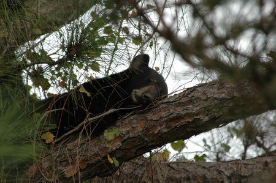

Florida bear cull called off; hunters kill nearly 300
(Reuters) - Florida's first bear hunt in two decades, which sparked protests by animal rights activists, was called off after just two days after nearly 300 bears were killed, wildlife officials said on Sunday.
The hunt, which was slated to last up to one week and allow as many as 320 black bears to be killed, was ended after 295 of the animals were "harvested," the Florida Fish and Wildlife Conservation Commission said in a statement.
The hunt aimed to stabilize a population of bears that had rebounded to more than 3,000 from several hundred in the 1970s, according to the commission.
The agency said hunting in the central and east panhandle portions of the state were closed on Saturday, after just one day of hunting, as hunters were more proficient than anticipated.
"Regulated hunting has a long, successful history of contributing to wildlife conservation in North America. Of the 41 states with resident bear populations, 33 of them conduct hunts and all have stable to increasing bear populations," the commission's statement said.
Hunt opponents held statewide protests on Friday, aiming to build on the international outrage generated this summer by the killing of Cecil, a rare black-maned lion, by an American dentist who was on an African hunting trip.
A few dozen held a vigil on Sunday for the bears at a wildlife management area at Rock Springs Run in Sorrento, according to the Orlando Sentinel newspaper.
"The real raw fact of the matter of losing these bears is devastating to many of us in the community," Emily Ruff, of the Florida School of Holistic Living, told the newspaper.
State wildlife officers have received increasing complaints about bears in neighborhoods close to woodlands where the animals have long roamed, as suburban development has further encroached on to their habitat.
Open garbage cans and unattended backyard grills attract bears looking for an easy meal. Hunt opponents say programs to eliminate such food sources could reduce conflicts between bears and humans more effectively than hunting.
At least four Floridians have been injured in bear attacks in the past two years, mostly in the suburbs north of Orlando.
The hunt comes at a time when several western states are considering regulations that would make it easier to hunt cougars, though the scope of the expansion varies widely, according to the Humane Society.
(Reporting by Curtis Skinner in San Francisco; Additional reporting by Letitia Stein in Tampa, Florida and Barbara Liston in Orlando, Florida; Editing by Nick Macfie)